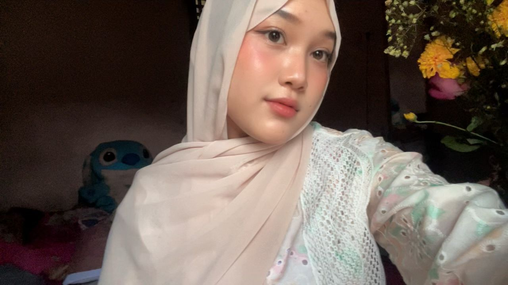

Select a chapter
Four small reminders of how far you have come.
Buka setiap bagian untuk melihat perjalanan yang membawa Amel sampai ke hari sidang.
21 · 07 · 2026
For Amel, before tomorrow
One Last Step Before a New Beginning
A little space from ur love, made to help you breathe before tomorrow.

THE ONE WHO MADE IT THIS FARResearcher profile
alias Amel alias si imut
Things Ansa notices
Kamu mungkin masih sering merasa belum siap. Tapi seseorang yang benar-benar belum siap tidak akan berhasil sampai sejauh ini.
The road behind tomorrow
Sidang memang berlangsung dalam satu hari. Tetapi perjalanan menuju hari itu jauh lebih panjang.
Select a chapter
Buka setiap bagian untuk melihat perjalanan yang membawa Amel sampai ke hari sidang.
Journey restored
Every revision, every anxious night, and every small progress brought you here.A quieter place for an anxious mind
Buka satu per satu saat pikiranmu mulai terlalu ramai.
Calm note
Choose one of the notes above.
Name the fear
From Ansa, for Amel
Tekan amplopnya. Surat ini tidak berisi tuntutan untuk menjadi sempurna. Hanya beberapa hal yang aku mau kamu ingat.
Sayang,
mungkin malam tadi pikiranmu sedang ramai. Kamu mungkin sedang membayangkan dosennya akan seperti apa, pertanyaan apa yang akan muncul, bagaimana kalau kamu blank, bagaimana kalau salah jawab, atau bagaimana kalau besok tidak berjalan sesuai harapanmu.
Aku tahu kamu sering merasa takut dan meragukan dirimu sendiri. Tapi aku juga tahu kamu tetap menyelesaikan banyak hal meskipun sedang merasa seperti itu. Dan menurutku, itu adalah salah satu hal yang paling kuat dari kamu.
Kamu bisa sampai di tahap sidang bukan karena kebetulan. Ada proses panjang di belakangnya. Ada revisi yang kamu kerjakan, bagian yang harus kamu pahami ulang, rasa lelah, dan banyak hari ketika kamu mungkin ingin berhenti sebentar. Tapi kamu tetap melanjutkan.
Besok kamu tidak harus menjadi orang yang paling sempurna di ruangan itu. Kamu hanya perlu menjadi Amel yang sudah belajar, sudah berusaha, dan sudah mengerjakan penelitiannya dengan sungguh-sungguh.
Kalau nanti kamu gugup, tidak apa-apa. Kalau harus diam sebentar sebelum menjawab, juga tidak apa-apa. Tarik napas, dengarkan pertanyaannya, lalu jawab pelan-pelan dari apa yang kamu pahami.
Aku bangga sama kamu. Bukan hanya karena besok kamu sidang, tapi karena kamu sudah bertahan dan membawa dirimu sampai sejauh ini.
Semoga Allah menenangkan hatimu, menjernihkan pikiranmu, memudahkan setiap jawabanmu, dan memberikan hasil terbaik untuk semua usaha yang sudah kamu lakukan.
And no matter how nervous you feel last night, please remember:you are more ready than you think, and I believe in you more than your fear does.
I love you.
— Mr. Kembaran Chanyeol
21 · 07 · 2026
Before you walk into that room
Hari ini, masuklah ke ruangan itu dengan tenang. Kamu tidak perlu membawa kesempurnaan. Cukup bawa semua hal yang sudah membuatmu sampai di sini.
Semoga Allah mudahkan langkah kamu hari ini, tenangkan hatinya, lancarkan presentasinya, jernihkan pikirannya, dan beri kemudahan dalam menjawab setiap pertanyaan.
Good luck for your thesis defense, my dear.
I’m proud of you, and I’ll be waiting to hear everything after it’s done.